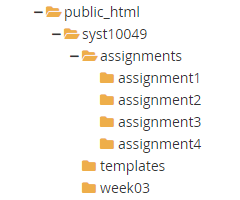

STEP 2. Using the File Manager in the cPanel, navigate to public_html directory, create the folder syst10049 using the +Folder menu item (see FIGURE 1).
FIGURE 1. +Folder is the second menu item from the left, in the top menu.
STEP 3. Move to the syst10049 folder and create the assignments folder, the templates folder, and the week03 folder.
STEP 4. Move to the assignments folder and create the assignment1, assignment2, assignment3, and assignment4 folders. Your sub-tree should look the same as illustrated in FIGURE 2.
FIGURE 2. Sub-tree on the server

STEP 5. Complete the steps in the "SYST10049 Setup Tasks: Protect Assignments with cPanel" in STEP 1.
STEP 6. If you make a mistake and protect the wrong folder:
Navigate to the folder that you have protected by mistake (remember: to navigate, you click on the icons)
Click on the text (name of the folder) that you want to unprotect.
Scroll down to the bottom of the page. Under the heading "Authorized Users", select (click on username) and then click the "Delete User" button underneath.